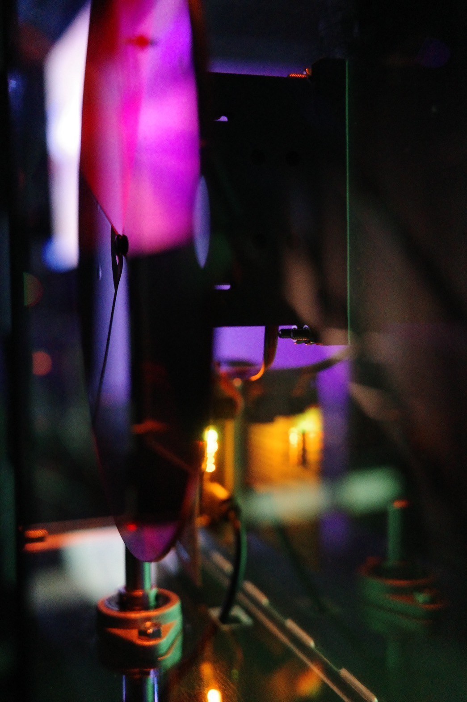
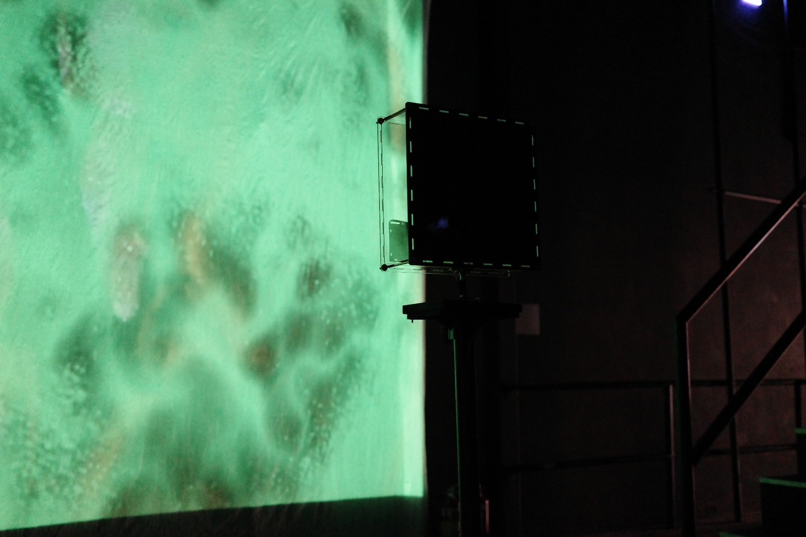
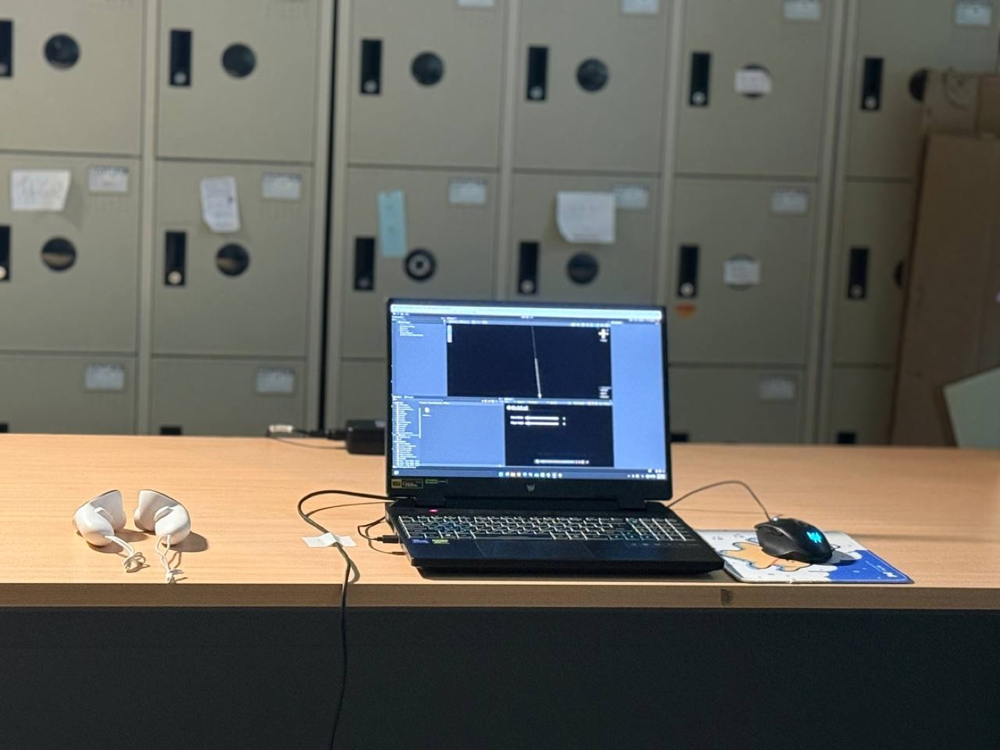
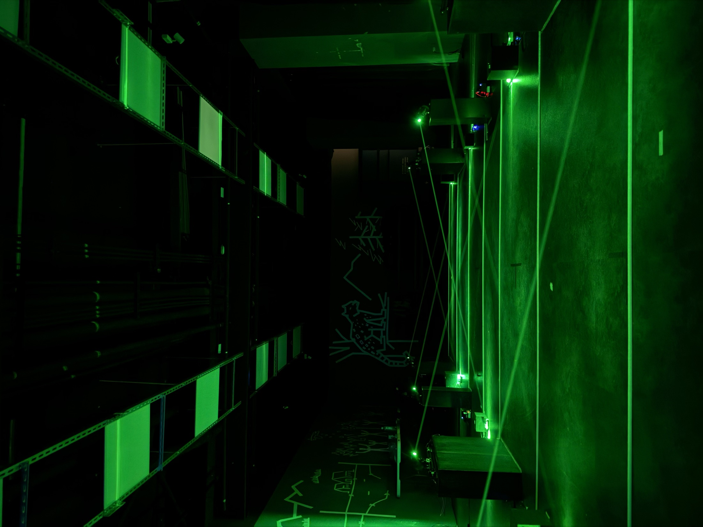
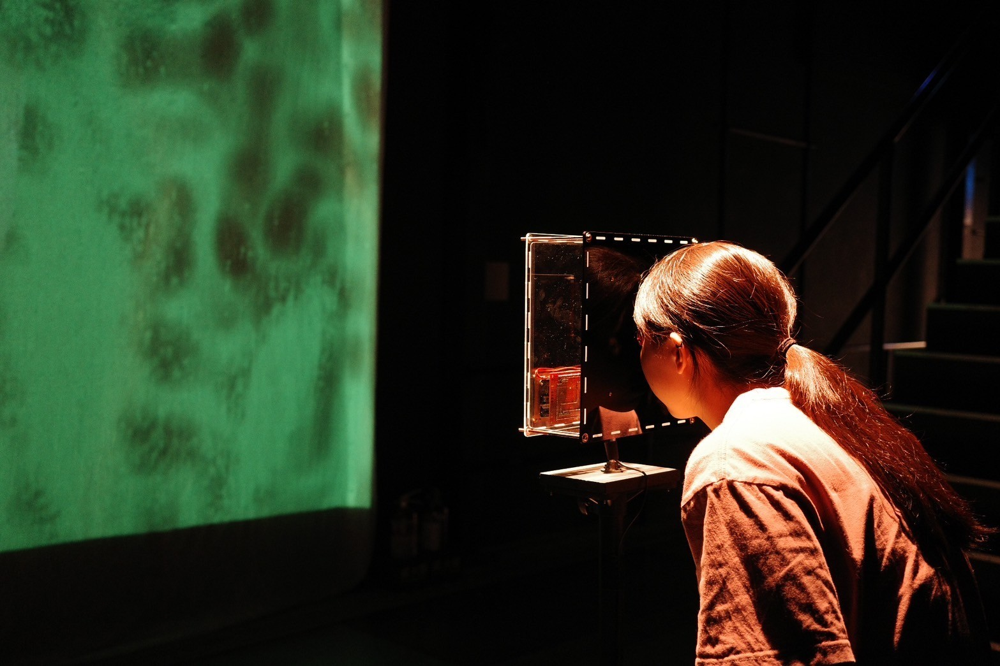
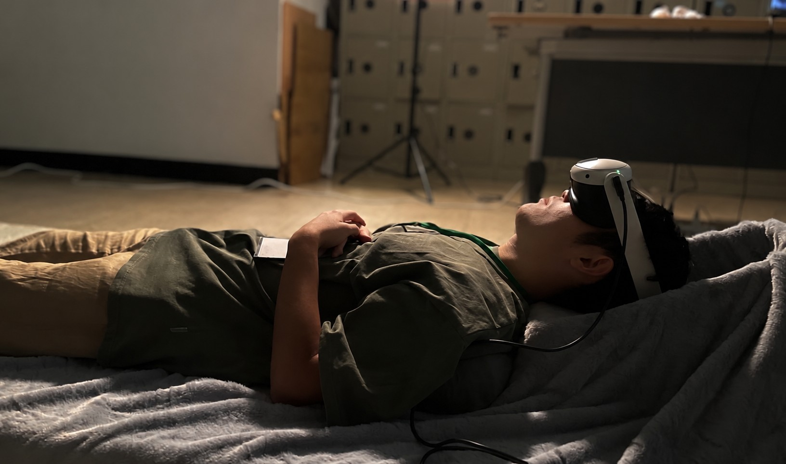
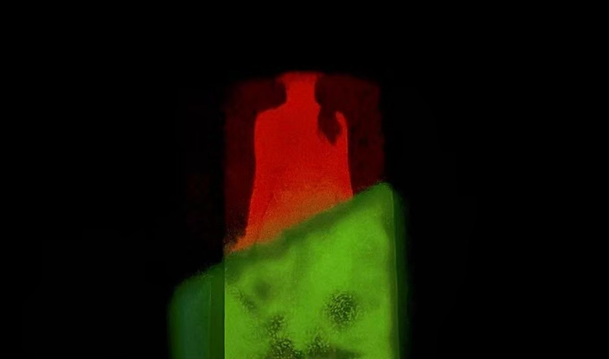
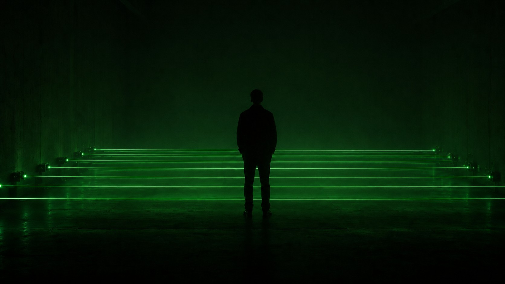

身體作為訊息的
物質前提
訊息，看起來像是
「自然存在」的東西。
訊號中斷、聲音消失——我們才意識到，剛剛那則訊息，一直依賴一整套可以被中斷的物質系統。
邊界、介面與路徑
訊息的傳遞依賴一系列物質條件，這些條件在當代通訊技術中通常是隱形的。這個觀察建立在三個既有論點上。
- 媒介的物理特性決定訊息的形式 Kittler, 1986
- 介面的悖論：越成功越退向背景，卻從未真正消失 Galloway, 2012
- 失效是物質性浮現的時刻 Virilio, 2005
本研究在此基礎上，把訊息的傳遞過程拆解為邊界、介面、路徑三個物質環節——各自對應一件作品。
- 物質前提如何透過創作被感知？
- 觀眾身體如何成為物質前提的構成要素？ 核心
- 失效如何作為物質前提的揭露時刻？
三件作品各自處理一個面向；核心創作《Beacon Silence》落在三者的交集——邊界、介面、路徑在身體上匯聚為一個物理事實。
物質條件的
兩種操作
Solitude Internet 2024
演算法原本不可見的「過濾邊界」，被轉化為觀眾必須移動身體、對準視線才能穿越的光學事件。
Solitude Internet 2.0


2.0 版把木盒改為壓克力結構，讓馬達、濾光片與連桿等機械部件透明可見——裝置的物質前提，從被包覆的內部，轉為可被直接看見的展示對象。（2024・華山預展 → 波蘭 Rondo Sztuki 藝術中心）
紙殼迴聲 2025
聲音傳導的「介面」，從聽覺通道轉向觸覺——成為可被身體直接接觸的物理振動。

觀眾，始終停留在系統的外部。
前兩件作品讓觀眾感知、參與了物質前提，但身體始終沒有真正影響訊息能否成立。
要讓身體成為訊息的構成條件，得處理最後、也最關鍵的面向——路徑。這就是核心創作《Beacon Silence》的起點。
Beacon Silence

Beacon Silence
一道道綠色雷射光束橫貫暗場——每一道光束各自傳送一個聲部；光束合在一起，才是完整的音樂。
用光傳訊，所以只能走直線。
Li-Fi 把訊號編碼成光源亮度的高速明滅（快到肉眼看不出在閃）；接收端用太陽能板接收這些亮度變化，把光轉回電，再還原成聲音訊號。
正因為靠光、沿直線傳播，身體一擋住光束，訊號就中斷——這就是視線原則。
每一次轉換，訊息都換一種物質形式：電 → 光 → 電 → 聲。光點代表訊號流動的方向。
多道平行的光束路徑
每一道光束都是一條獨立的訊號通道——一端發射、另一端以太陽能板接收；中間的空間，正是身體可以介入、決定訊號能否通過的地方。
觀眾做的是加法，
作品回應的卻是減法。
越多人想參與，被呈現的聲音就越少；當每一道光束都被身體遮蔽——聲景歸於飽和的寂靜。
身體，從系統外部的「輸入」，成為訊息能否傳遞的物理條件本身。
失效，未必只是需要被克服的故障。
它是物質前提揭露自身的時刻——是被刻意設計、可以反覆發生的作品核心狀態。
這個重新理解，建立在幾個既有論點上：
- 失效內在於技術，與發明同時誕生 Virilio, 2005
- 寂靜使聲音的缺席成為可被感知的對象 Voegelin, 2010
本研究據此把失效從「偶發的事故」，轉為可被設計、持續發生的作品狀態。
| 邊界 | 介面 | 路徑 | |
|---|---|---|---|
| 對應作品 | Solitude Internet | 紙殼迴聲 | Beacon Silence |
| 物質化對象 | 演算過濾邊界 | 聲音傳導介面 | Li-Fi 光束路徑 |
| 觀眾位置 | 感知者 | 參與者 | 構成者 |
| 失效形式 | 視角偏離 | 頭部離開紙板 | 身體遮蔽光束 |




邊界 · 介面 · 路徑 失效作為方法